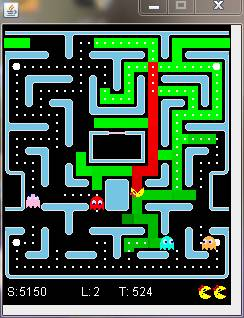
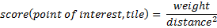

I’ve always had an interest in artificial intelligence and during
2011 entered 2 AI competitions.
PacMan vs Ghosts
hosted by Essex University
Ants hosted the University
of Waterloo and sponsored by Google
The PacMan competition has been running for several years but
this was the first time you were able to enter code to control the
ghost team or the PacMan. Previous competitions only allowed
control of the PacMan. There was no choice over the
programming language to use, the game engine was written in
Java so I had to learn Java before I could implement my ideas.

The aim for the PacMan was to get the highest score. The aim for
the ghosts was to minimize the PacMan’s score.
Originally I was only going to write code for the Ghosts but I
found that having done so, I had already worked out the best place
for a PacMan to head to in order to escape, so the PacMan
controller “fell out in the wash”. Throughout the competition my
Ghosts (called PhantomMenace) were fighting for first place with
xsl, though he always seemed to have the edge. The PacMan was
having better luck and was performing twice as well as the
opposition, i.e. it was averaging about twice the score of the
team in second place.
My overall approach was to map the problem space onto a taxi
company fulfilling pickups in an optimal fashion. Documentation
for my entries can be found in the reports section of their
website and the code is about to be put into the public domain.
My children took an interest in the competition so I created a
simple ghost team entry (Spooks) for them, based on their ideas.
Even though this was only about 100 lines of code, it managed a
highly respectable 4th in the final standings. In the last week of
the competition I had a simple idea for a “catch me if you can”
PacMan. The implementation had no code to clear the level of
pills, all it did was head to the safest place in the maze.
Amazingly this ended up winning the competition mainly due to the
fact that if the ghosts had not caught the PacMan within 3000
moves, the PacMan was awarded the points for all the remaining
pills in the maze and then moved onto the next level.
So at the end of the competition I had come 1st (Spooks) and 2nd
(PhantomMenace) in the PacMan competition and 3rd (PhantomMenance)
and 4th (Spooks) in the Ghosts competition. There were about 20
entrants to the competition, hopefully next year there will be
more. You can play against all the ghost team entries and rate
which ones you prefer on the PacMan vs Ghosts website.
The Google AI challenge is run on a different scale having about
8000 entrants. By the time I discovered the competition there were
already some really good solutions dominating the top places in
the rankings. My aim was to be the top British entry which meant a
top 50 finish.
The challenge was to write code to control a colony of ants,
exploring the area around them, finding food in order to grow new
ants, fighting off other ants and eventually finding enemy ant
bases and taking control of them.
My entry (Memetix) is written in Java and consists of 3
components.
1. Exploration
2. Combat
3. Moving the ants
For each tile on the map I store the last time it was seen, if it
contains water, food, a hill or an ant. If it contains an ant, how
long the ant has been there.
I chose to think of the map as a stretched rubber surface and then
place ball bearings onto the surface at points of interest. These
balls distend the rubber and act as attractors for my ants. My
ants simply roll over the surface, heading down hill towards the
points of interest. The map is composed of a set of tiles in a
grid pattern. Each turn an ant can move north, south, east or
west, or it can stay put.
Some of the points of interest are more interesting (heavier) than
others. The following table shows the weightings I used.
| Point of Interest |
Weighting |
Number of ants to affect |
Starting tile(s) |
|---|---|---|---|
| Food |
8 |
1 |
Called once for each food tile |
| Unexplored tile | 3 |
All |
Called once with the list of all unexplored tiles |
| Expired tile | 1 |
1 |
Called once with each expired tile unless I have more than 100 of them when I call it once with the list of expired tiles |
| Enemy Hill | 16 |
All |
Called once for each enemy hill tile |
| My Hill |
3 |
Number of attackers |
Called once for each home
base |
| Enemy Ant |
1 |
6 |
Called once for each enemy ant tile |
An expired tile is defined as a tile I haven’t seen for a while (3
turns worked best). Additionally, I work out the edge of my known
space each turn and store this as a list of unexplored tiles.
My hill is only an attractor if there is an enemy ant within 4
moves or there are more enemy ants in the area. I scan out until I
reach 4 of my ants, if I find more enemy ants than I have
defenders while doing this, my hill becomes an attractor. I
achieve this by calling my BFS routine (more later) with a
weighing of zero. The routine returns the number of ants found
(mine and enemies) and the distance to my nearest ant and the
nearest enemy. I then decide if I should call the routine again,
but this time with the appropriate weighting.
I do the same for each enemy ant, scanning out until I find 4 of
my ants. If I outnumber the enemy it becomes an attractor
otherwise it is ignored.
Food is only an attractor if there isn’t an enemy ant nearer to
it.
The score for the point of interest is reduced the further away
from the point we are using the same inverse square law, just like
gravity.

To score each point of interest I run a breadth first search
(BFS) and add in the score for each tile reached until I reach the
required number of my ants. The key point is to stop BEFORE
reaching the final ant. This avoids the problem of local maxima
appearing in the scoring data as the score for the ant’s tile will
always be lower than an adjacent tile that is nearer to the point
of interest.
For example a food (shown in orange) will generate the following
scores and stop before it reaches the ant (blue)
| 8/9 |
||||
| 8/9 |
8/4 |
8/9 |
||
| 8/9 |
8/4 |
8/1 |
8/4 |
8/9 |
| 8/9 |
8/4 |
8/9 |
Ant |
|
| 8/9 |
||||
By adding up all the scores from all points of interest we end up
with a total score for each tile of the map. To break ties when
the scores are equal I assign a random number to each tile, this
is not added to the score, just used to make a choice between
equal scores. In the example above the scores for the tiles north
and west of the ant are the same so the random numbers assigned to
those 2 tiles would be used to decide which it considers best this
turn.
A big improvement in my code occurred when I realised how to cope
with blocked ants, that is ants that have been stuck in the same
place for a long time. As I run through the breadth first search,
tiles where my ants are stuck are treated like mud. If an ant has
been there 5 turns then the BFS will not move on from this tile
for 5 turns, effectively increasing the distance travelled by 5.
This means other ants look for alternative paths around blockages.
This simple idea moved me from about 30th in the rankings up to
about 20th.
The code consists of a routine called explore (70 lines of code)
that calls the BFS routine “ripple” (50 lines of code) for each
point of interest and was discussed in more detail in the Gravity
Wells forum post.
The combat routine’s job is to set the score for tiles where my
ants would die to -1.
To do this I consider each of 5 possible positions each ant can be
in after 1 move and then count how many enemy ants it could be
fighting.
I then loop through each of my ants and the positions they could
be in after 1 move and check to see if I would be fighting an
enemy that is fighting less ants than I am. If so I set the tile
score to -1. If I would kill an enemy ant but die myself I set the
score to -0.5. My ants will not enter a tile where they would die.
If they have no choice then they prefer to be in one where they
will kill an enemy ant (score -0.5) to one where they will die
(-1).
Sometimes you need to accept losses in order to break through the
enemy’s defensive lines. This again was a key part of the design
and took me from 20th to 10th. My code to trigger this is really
simple. If my growth rate is positive (over the last 10 turns) and
I have 32 ants or more that didn’t move last turn I skip the code
that assigns -0.5 to tiles. This allows me to enter tiles where a
1:1 trade is likely. During the last 10% of the game I’m slightly
more aggressive and I reduce the threshold from 32 to 16 unmoved
ants before triggering this behaviour.
The code consists of a routine called combatResult (80 lines of
code) and was discussed in more detail in the “A simple approach
to combat” forum post. I ended up replacing the influence count
array discussed in the forum with a routine called enemyCount that
was slightly more CPU intensive but produced more accurate
results. For example, when approaching the combat zone on a
diagonal it is not possible to get all 3 ants into the 2 tiles
they could reach! My new routine coped with this, whereas the
influence based code didn’t.
By now I have scored each tile of the map and want to move our
ants in order to maximize the total score of all the tiles
occupied.
My first implementation of this code looped through each ant,
picked the highest scoring of the 5 possible moves available and
issued that order. This meant I often moved 2 of my ants into the
same tile (painfully destroying both of them). The first
improvement was to check to see if I had already assigned an ant
to a tile and not move another ant there.
The next improvement sorted my ants according to the score of the
tile they were currently in. I moved the ones with the lowest
score first (the logic being they would get the most improvement
by moving first). I further refined this to total up the scores
for the 5 possible moves an ant could do and sort my ants list
with the lowest total first. As a side effect this solves the
problem that you usually want to move ants with the least number
of valid moves first.
The final improvement was to allow an ant to issue a “push”
request if it wanted to move into a cell that was currently
occupied. Only when an ant is “pushed” will I allow it to move
into a lower scoring tile but it is not allowed to swap places
with the “pusher” or move into the tile where it would die. This
has a massive effect on my combat performance and it allowed a
stream of ants arriving at the combat zone of an enemy ant to
shuffle around the zone as ants from behind it gave it a gentle
“push”. This improvement took me into the top 5 for the first
time.
I had a bug in this code that I fixed 2 days before the deadline.
This took me up to position 2 in the rankings.
The code consists of a routine called issueOrders (50 lines of
code). I also wrote a few utility routines for working out combat
zones and visibility zones (40 lines of code) so in total I added
around 300 lines of code to the Java starter package.
Without any special coding the ants display the following
behaviours
· They
explore mazes in a really efficient manner. When two ants get to a
junction the second will go in a different direction to the first
due to the distance they are away from the unexplored zone.
· Once an
area is under my control the ants naturally form a patrol pattern,
leaving 1 ant behind to respond to the “expired” tiles and to pick
up food as it appears.
· In the
early stages my ants ignore enemy ants as they cannot out number
them, this gives good early exploration behaviour
· Later on
the ants naturally dominate areas by picking off the weak enemy
first, eventually eliminating all enemies with minimal losses or
stand offs
This AI challenge soaked up a lot of my spare time and was hugely
rewarding. It has since been pointed out to me that there are
known techniques and algorithms for solving a lot of the problems
I encountered. My gravity wells concept is very similar to
collaborative diffusion, combat could be evaluated using a min/max
tree search and the ant moving problem could be solved with
constraint optimisation. However I got a huge amount of enjoyment
from solving these problems in my own way and probably came up
with the ideas I did because I wasn’t aware of how it should be
done!
My thanks go out to the organisers and the competitors and friends
who provided feedback on my ideas as I developed them.